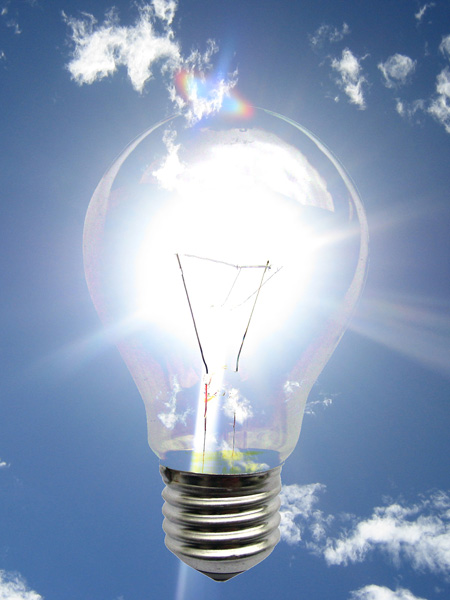
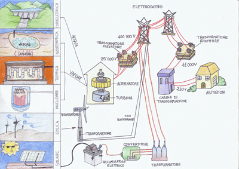
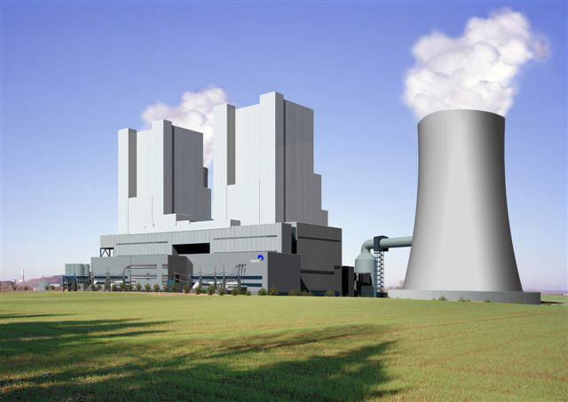

| Energia Elettrica | L'energia elettrica è l'energia associata all'elettricità. Il termine è utilizzato per indicare sia all'energia di una corrente elettriche e sia all'energia elettrostatica derivante da una particolare distribuzione delle cariche in un corpo. L'energia elettrica può essere prodotta tramite dei processi di trasformazione dall'energia chimica (es. pile chimiche), dall'energia meccanica (es. generatori, dinamo, alternatori), dall'energia termica, dall'energia luminosa (es. fotoelettrico) ecc. L'energia elettrica ha il vantaggio di essere facilmente trasportata e distribuita. |
 |
| Produzione Energia Elettrica. | La produzione di energia elettrica rappresenta il 'primo passaggio' nel processo che conduce dalla produzione fino all'utilizzatore finale di energia elettrica. |
 |
| Centrale Elettrica | Le centrali elettriche sono impianti finalizzati alla produzione di energia elettrica. Ogni centrale elettrica è caratterizzata dalla potenza, ossia la quantità di energia che la centrale può erogare in un anno, e la tipologia del combustibile utilizzato per la generazione dell'elettrica. Esistono diverse tipi di centrali elettriche. |
 |